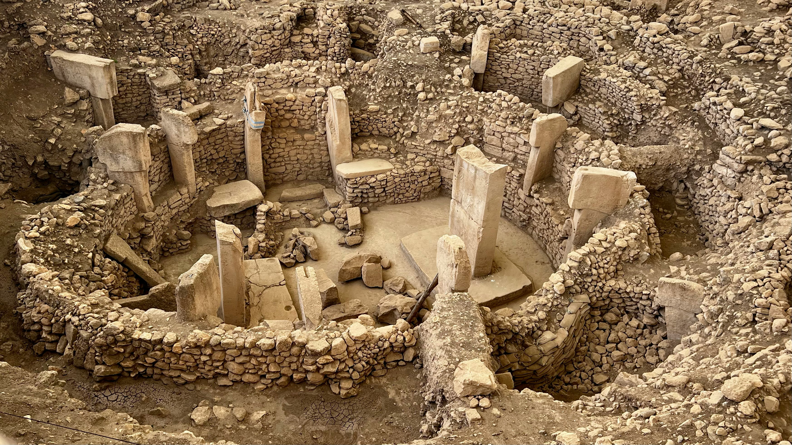
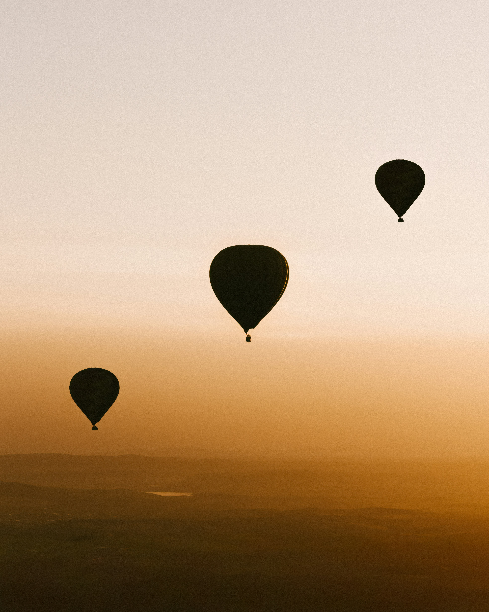
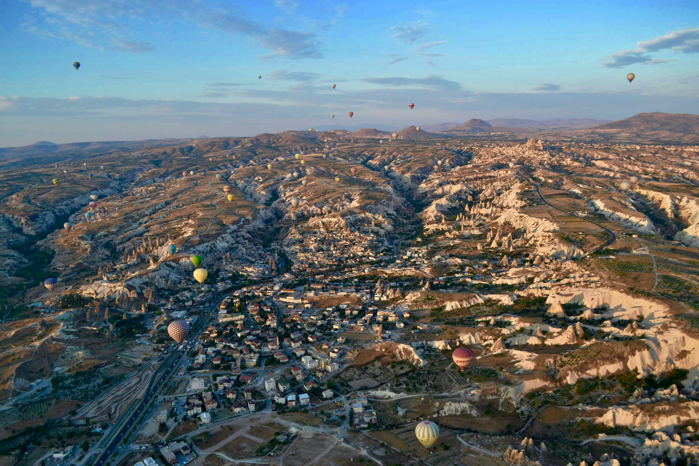

L'itinerario completo
Nove giorni. Diecimila anni.
Istanbul → Şanlıurfa — Il varco verso il Neolitico
Volo interno da Istanbul a Şanlıurfa, la città dei profeti. Pomeriggio al Museo Archeologico di Şanlıurfa, dove la statua più antica del mondo — l'Uomo di Urfa — attende in silenzio da 11.000 anni. Visita a Balıklıgöl, il lago sacro con le carpe leggendarie, nel cuore della vecchia città.

Göbekli Tepe — Il tempio più antico del mondo
Giornata intera dedicata a Göbekli Tepe con un archeologo specialista del sito. I pilastri a T scolpiti 11.600 anni fa — seimila anni prima di Stonehenge, quattromila prima delle piramidi. Esplorazione dei recinti circolari, dei bassorilievi di animali e dei simboli che ancora sfidano ogni interpretazione. Tramonto sulla piana mesopotamica.
Göbekli Tepe → Diyarbakır — Mura nere e minareti
Trasferimento verso Diyarbakır lungo la valle dell'alto Tigri. Le mura di basalto nero della città — seconde per lunghezza solo alla Grande Muraglia — raccontano millenni di conquiste e resistenze. Visita alla Ulu Cami, la Grande Moschea, una delle più antiche dell'Islam, e passeggiata nei vicoli della città vecchia tra caravanserragli e chiese siriache.

Diyarbakır → Çatalhöyük — La prima città dell'umanità
Lungo trasferimento attraverso l'altopiano anatolico — un paesaggio di steppe e vulcani dormienti che non è cambiato da millenni. Arrivo a Çatalhöyük, patrimonio UNESCO: il più grande insediamento neolitico conosciuto, dove 9.000 anni fa ottomila persone vivevano in case senza strade, entrando dai tetti. Prima visita al sito e al centro visitatori.
Çatalhöyük — Scavi, ricostruzioni, misteri
Giornata intera negli scavi di Çatalhöyük. Esplorazione delle aree di scavo protette dove gli strati abitativi si sovrappongono per millenni. Le ricostruzioni a grandezza naturale delle case neolitiche — i murali di caccia, le sepolture sotto i pavimenti, le figurine della Dea Madre. Visita al museo del sito con i reperti originali.
Çatalhöyük → Konya — Il mistico e l'antico
Breve trasferimento a Konya, città santa dei dervisci rotanti. Il Museo Mevlana, dove riposa Rumi — il poeta sufi che otto secoli fa scrisse che ciò che cerchi ti sta cercando. La Moschea Alaeddin sulla collina più antica della città, tra resti selgiuchidi e giardini di rose. Sera libera nel bazar coperto.
Konya → Cappadocia — La valle scavata nel tempo
Trasferimento verso la Cappadocia attraverso il paesaggio lunare dell'altopiano. Trekking nella Valle di Ihlara — un canyon profondo 100 metri scavato dal fiume Melendiz, con chiese rupestri bizantine nascoste tra le pareti di tufo. Quattordici chilometri di sentiero lungo il fiume, tra affreschi medievali e silenzio assoluto. Arrivo nel villaggio di Göreme.


Cappadocia — Sotto la superficie
Discesa nella città sotterranea di Derinkuyu — otto livelli scavati nel tufo dove intere comunità vivevano in segreto. Poi le chiese rupestri del Museo a Cielo Aperto di Göreme, con affreschi bizantini del X e XI secolo perfettamente conservati nelle grotte. Pomeriggio tra i camini delle fate nella Valle di Devrent e la vista panoramica dalla fortezza di Uçhisar.
Cappadocia — Mongolfiera all'alba, partenza
Sveglia prima dell'alba per il volo in mongolfiera sulla Cappadocia — centinaia di palloni che si alzano nel silenzio sopra i camini delle fate, le valli e i villaggi scavati nella roccia. Un'esperienza che chiude il viaggio come un punto esclamativo sospeso nel cielo. Colazione in hotel, trasferimento all'aeroporto di Kayseri e volo di rientro.